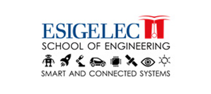
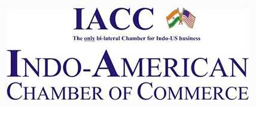
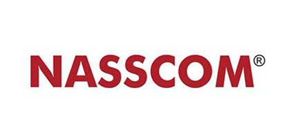
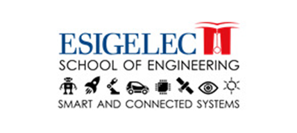
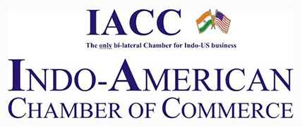
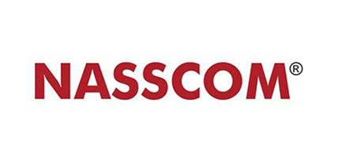

Partner A Collaboration
JIS Group's collaboration with globally renowned universities marked a turning point in redefining education standards in India. Partnering with institutions like the University of Massachusetts and the University of Queensland, JIS brought cutting-edge courses and expertise to its students.
Through exchange programs, students gained exposure to international teaching methods, diverse cultures, and advanced research facilities. Over 300 students participated in these programs, many of whom secured prestigious scholarships and global job offers. This partnership also enabled JIS faculty to co-develop research projects with international scholars, leading to publications in top-tier journals. Today, JIS is recognized as a pioneer in international collaborations, providing its students a global edge.
Read More
Partner B Innovation
JIS Group's collaboration with global tech giants like IBM and Microsoft revolutionized its curriculum. By integrating real-world technology practices into academic programs, JIS offered students industry-aligned training.
This partnership introduced hands-on workshops, hackathons, and certifications in emerging technologies such as AI, blockchain, and IoT. Over 500 students received certifications, with many securing internships and placements at top companies. The collaboration also established innovation labs on campus, fostering creativity and entrepreneurship among students. JIS became a hub for tech-savvy graduates ready to lead in the global market.
Read More

Partner C Success
JIS Group partnered with leading healthcare universities in Europe to revolutionize its medical and biotechnology education. Collaborative research on advanced medical devices and AI-driven diagnostics attracted international funding and recognition.
Through these partnerships, students gained opportunities to work on cutting-edge projects alongside global researchers. Several students published papers in international journals and received accolades for their innovative solutions. This collaboration strengthened JIS’s reputation in the healthcare education sector, producing graduates who are not just employable but sought-after globally.
Read More
 




